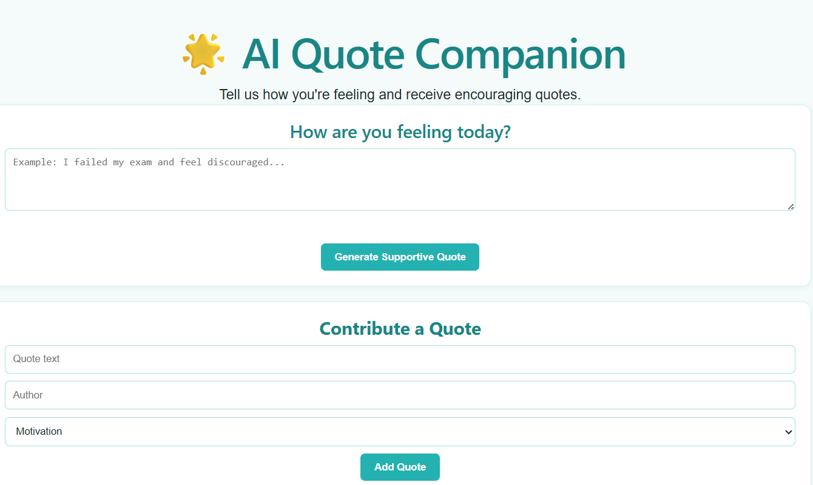

My Projects
AjaiSikam: Mentoring Platform
It is a mentorship matching platform that connects students and early-career individuals with experienced professionals, seniors, and researchers who are willing to guide them for free, without awkwardness or pressure.
We describe our needs, AI understands it, and finds/recommends the right person.
Developed using Django REST Framework, React, PostgreSQL, and Sentence Transformers, featuring JWT authentication, AI-based semantic matching, role-based dashboards, and real-time mentor recommendations.
View Live - Home PageQuote Companion
Developed a full-stack AI-powered quote generation web application using Django REST Framework, React, PostgreSQL, Docker, and Gemini API, enabling mood-based quote generation, and community quote management. Deployed backend and db on Render, frontend on Vercel with CICD.
We describe our mood, AI understands it, and generates quotes based on that.
Includes Community Quote Contribution allowing user to add their own quotes.
View Live - Home Page
Taxation System Nepal
A group collaboration project to develop a full-stack tax administration system using Django REST Framework, React, and PostgreSQL, streamlining digital tax management and user services.
View ProjectAuto Screenshot Taker Tool
Developed and published a Python automation package on PyPI that captures screenshots at customizable intervals and automatically saves them in user-defined formats and locations.
View ProjectChitto Order
Chitto Order is a web-based system that allows customers to scan a QR code and access a restaurant menu directly in their browser without installing any application. Customers can place orders with quantity selection, remarks, and automatic total calculation.
Staff are provided with an interface to efficiently manage orders, including editing and deleting orders. Built using Flask, MySQL, HTML, JavaScript and Tailwind CSS, the system improves both customer experience and restaurant workflow.
View Live - Customer Side View Live - Staff Side
Optimizing Traffic Flow
This research-based simulation project explores the impact of introducing dedicated motorcycle lanes in Kathmandu.
Built using Python and Pygame, the project compares two scenarios: the current shared-lane system and a proposed dedicated-lane system.
Simulation results showed improved traffic flow, increased average speeds, reduced congestion, and fewer collision risks when motorcycle lanes were separated.
View Project
Selilac E-Commerce Website
Selilac is an online plant-selling platform designed to make buying and selling indoor and outdoor plants easier and more accessible.
Built using HTML, CSS, JavaScript, jQuery, and PHP, the platform focuses on simplicity, efficient transactions, and promoting gardening culture.
View Project